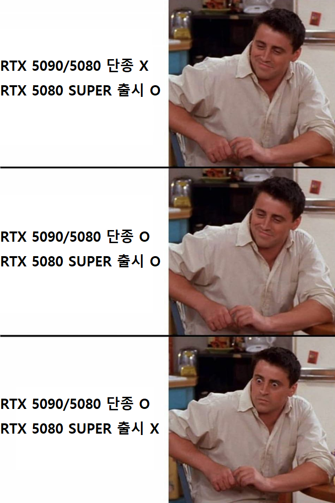

컴조립판 격언으로 컴이 필요하다면 미래에 나올 더 좋은 부품생각치 말고 사라고 하더라
그때는 또 더 좋은거 나오니까 그런거 생각하면 계속 구매 미룬다고
지금 컴터 바꾸는거 나는 나쁘지 않다고봄
앞으로를 예상해보면 컴부품이 AI발전 이전의 예전의 값으로 돌아간다는 보장이 갈수록 희박해지고 있음
AI이후의 뉴노멀시대에선 결국 구매를 결정하는 그 순간이 제일 쌀때라고 나는 봄
몇달전에 샀으면 더 싸게 살테지만 어떻게 하겠냐 이미 시간이 지났는걸
웅 많이 피하려는건 아니고 ㅋㅋ 그냥 절대 사지마 하는 단기 튀는 구간이 간혹 있는거 같더라고 ㅋㅋㅋ
그런 구간인지.. 걍 흐름에 묻혀있는 구간인지 궁금했음 ㅋㅋ 땡큐!
반도체 호재뉴스 뜰때는 피해서 컴사면 될거임
개인적으로 이 때는 PC부품 시장가가 조금 더 안정화 될 기미를 가지고 있다보거든
왜냐하면 반도체가 민간시장뿐만 아니라 기업시장에서도 수요가 많으니 반도체 호재뉴스가 떳을거고 해서
조립컴 시장에 부품이 안 흘러들어올걸 예상하고 부품가격을 약간 높게 보수적으로 잡는걸로 알거든
하지만 이렇든 저렇든 시간이 지나면 조립컴 시장에 부품이 흘러들어오기는 해서
실상은 몇달 기달리면 호재뉴스 떳을 당시보다는 낮은가격에 조립컴 맞춰 살 수 있을거임
중간에 연이어 호재뉴스가 터져서 진짜 부품이 품귀현상만 벌어지지 않는다면 가격도 상승선이 올라간다는 단점이 있지만
나도 요새 컴퓨터 알아보는 중이라 좀 찾아봤는데, 이쪽 잘아는 사람들도 "몇년 안에는 가격 내려가기 힘들지 않을까... 근데 몇년뒤에라도 내려갈지는 모르겠다" 쪽이더라 ㅋㅋㅋㅋ 몇년이고 지켜볼 여유 되는거 아니면 걍 지금이 제일 싸다 생각하고 사는게 맞는듯?
난 12월에 적금 만기있어서 그때 200중후반잡고 살려고 알아보고있음 ㅋㅋㅋㅋ
난 4070 보급모델 쓰는데 딱히 게임하는데 불편한게 없음 모든게임 60프레임 고정으로 하는편이라 최고사양도 필요없음 딱히 안돌아가는 게임도 없음
당분간 안내려감(당분간=n년)
4070S가 내 마지막 그래픽 카드가 되겠구나.. 시발
부럽다.. 난 4060ti 인디..

구매가 아닌 구독의 시대가 온다
작년에 지스킬 램산게 신의 한수 ㅋㅋㅋ
90/80 단종
80 슈퍼 출시(예정)
게이머는 라데온쪽이나 써야지 이젠
엔비디아는 ai쪽에 더 치중할 것 같긴해
요즘 게이밍 성능 라데온 많이 올라옴?
내가 거의 몇년은 컴퓨터 관심없었는데 그때는 게임하는데 라데온쓰면 븅신소리 들었는데 ㅋㅋㅋㅋ
rx 90 시리즈 쓸만함 엔디비아 가격 대비 성능은 그래도 나오는 편이긴 한데
더 디테일하게 들어가면 아쉽긴하지
엔비디아 글카가 점점 품귀현상이 되어가니 걍 라데온 가는것도 나쁘지 않은 선택임
ps5잘만쓰고 있다가 pro나오자 마자 삼. 난 이거면돼...
일반사용자용이 아예 안나온다고?
아직현역인 1060을 응원해주세요!!
내 5090아 6090때까지 화이팅!
지금 컴터 바꾸는 건 어캐 생각해?